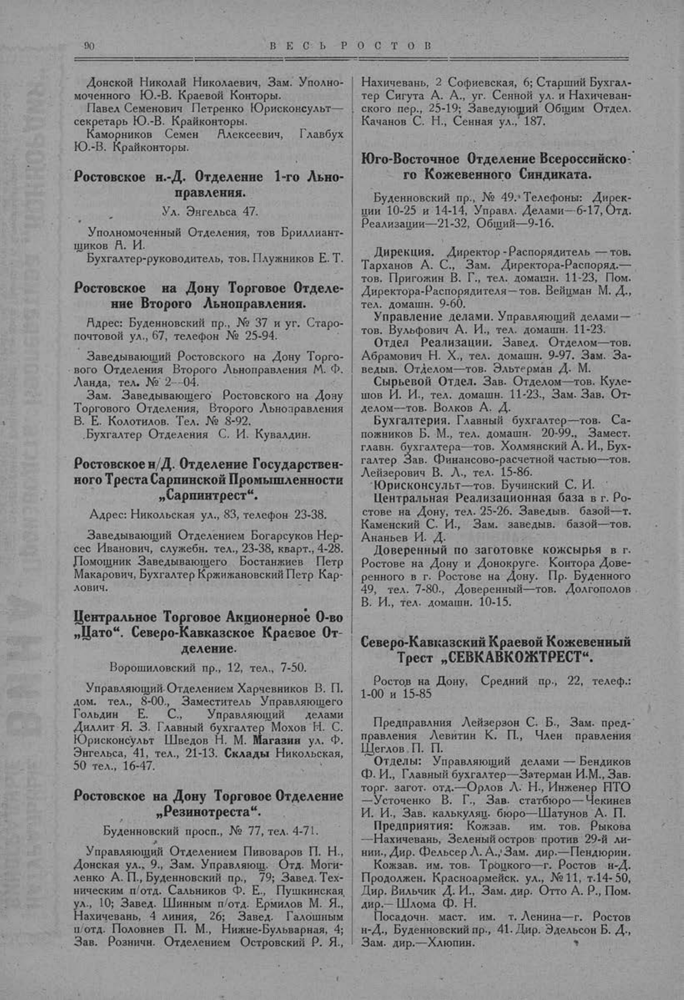

Лист источника 140
Скан

Распознанный текст
90 В Е С Ь Р О С Т О В
Донской Николай Николаевич, Зам. Уполно-
моченного Ю.-В. Краевой Конторы.
Павел Семенович Петренко Юрисконсульт—
секретарь Ю.-В. Крайконторы.
Каморников Семен Алексеевич, Главбух
Ю.-В. Крайконторы.
Ростовское н.-Д. Отделение 1-го Льно-
правления.
Ул. Энгельса 47.
Уполномоченный Отделения, тов Бриллиант-
щиков А. И.
Бухгалтер-руководитель, тов. Плужников Е. Т.
Ростовское на Дону Торговое Отделе-
ние Второго Льноправления.
Адрес: Буденновский пр., № 37 и уг. Старо-
почтовой ул., 67, телефон № 25-94.
Заведывающий Ростовского на Дону Торго-
вого Отделения Второго Льноправления М. Ф.
Ланда, тел. № 2--04.
Зам. Заведывающего Ростовского на Дону
Торгового Отделения, Второго Льноправления
В. Е. Колотилов. Тел. № 8-92.
Бухгалтер Отделения С. И. Кувалдин.
Ростовское н/Д. Отделение Государствен-
ного Треста Сарпинской Промышленности
„Сарпинтрест“.
Адрес: Никольская ул., 83, телефон 23-38.
Заведывающий Отделением Богарсуков Нер-
сес Иванович, служебн. тел., 23-38, кварт., 4-28.
Помощник Заведывающего Бостанжиев Петр
Макарович, Бухгалтер Кржижановский Петр Кар-
лович.
Центральное Торговое Акционерное О-во
„Цато“. Северо-Кавказское Краевое От-
деление.
Ворошиловский пр., 12, тел., 7-50.
Управляющий Отделением Харчевников В. П.
дом. тел., 8-00., Заместитель Управляющего
Гольдин Е. С., Управляющий делами
Диллит Я. З. Главный бухгалтер Мохов Н. С.
Юрисконсульт Шведов Н. М. Магазин ул. Ф.
Энгельса, 41, тел., 21-13. Склады Никольская,
50 тел., 16-47.
Ростовское на Дону Торговое Отделение
„Резинотреста“.
Буденновский просп., № 77, тел. 4-71.
Управляющий Отделением Пивоваров П. Н.,
Донская ул., 9., Зам. Управляющ. Отд. Моги-
ленко А. П., Буденновский пр., 79; Завед. Тех-
ническим п/отд. Сальников Ф. Е., Пушкинская
ул., 10; Завед. Шинным п/отд. Ермилов М. Я.,
Нахичевань, 4 линия, 26; Завед. Галошным
п/отд. Половнев П. М., Нижне-Бульварная, 4;
Зав. Розничн. Отделением Островский Р. Я.,
Нахичевань, 2 Софиевская, 6; Старший Бухгал-
тер Сигута А. А., уг. Сенной ул. и Нахичеван-
ского пер., 25-19; Заведующий Общим Отдел.
Качанов С. Н., Сенная ул., 187.
Юго-Восточное Отделение Всероссийско-
го Кожевенного Синдиката.
Буденновский пр., № 49. Телефоны: Дирек-
ции 10-25 и 14-14, Управл. Делами—6-17, Отд.
Реализации—21-32, Общий—9-16.
Дирекция. Директор -Распорядитель — тов.
Тарханов А. С., Зам. Директора-Распоряд.—
тов. Пригожин В. Г., тел. домашн. 11-23, Пом.
Директора-Распорядителя—тов. Вейцман М. Д.,
тел. домашн. 9-60.
Управление делами. Управляющий делами—
тов. Вульфович А. И., тел. домашн. 11-23.
Отдел Реализации. Завед. Отделом—тов.
Абрамович Н. Х., тел. домашн. 9-97. Зам. За-
ведыв. Отделом—тов. Эльтерман Д. М.
Сырьевой Отдел. Зав. Отделом—тов. Куле-
шов И. И., тел. домашн. 11-23., Зам. Зав. От-
делом—тов. Волков А. Д.
Бухгалтерия. Главный бухгалтер—тов. Са-
пожников Б. М., тел. домашн. 20-99., Замест.
главн. бухгалтера—тов. Холмянский А. И., Бух-
галтер Зав. Финансово-расчетной частью—тов.
Лейзерович В. Л., тел. 15-86.
Юрисконсульт—тов. Бучинский С. И.
Центральная Реализационная база в г. Ро-
стове на Дону, тел. 25-26. Заведыв. базой—т.
Каменский С. И., Зам. заведыв. базой—тов.
Ананьев И. Д.
Доверенный по заготовке кожсырья в г.
Ростове на Дону и Донокруге. Контора Дове-
ренного в г. Ростове на Дону. Пр. Буденного
49, тел. 7-80., Доверенный—тов. Долгополов
В. И., тел. домашн. 10-15.
Северо-Кавказский Краевой Кожевенный
Трест „СЕВКАВКОЖТРЕСТ“.
Ростов на Дону, Средний пр., 22, телеф.:
1-00 и 15-85
Предправлния Лейзерзон С. Б., Зам. пред-
правления Левитин К. П., Член правления
Щеглов . П. П.
Отделы: Управляющий делами — Бендиков
Ф. И., Главный бухгалтер—Затерман И.М., Зав.
торг. загот. отд.—Орлов Л. Н., Инженер ПТО
—Усточенко В. Г., Зав. статбюро—Чекинев
И. И., Зав. калькуляц. бюро—Шатунов А. П.
Предприятия: Кожзав. им. тов. Рыкова
—Нахичевань, Зеленый остров против 29-й ли-
нии., Дир. Фельсер Л. А., Зам. дир.—Пендюрин.
Кожзав. им. тов. Троцкого—г. Ростов н-Д.
Продолжен. Красноармейск. ул., № 11, т.14-50,
Дир. Вильчик Д. И., Зам. дир. Отто А. Р., Пом.
дир.—Шлома Ф. Н.
Посадочн. маст. им. т. Ленина—г. Ростов
н-Д., Буденновский пр., 41. Дир. Эдельсон Б. Д.,
Зам. дир.—Хлюпин.